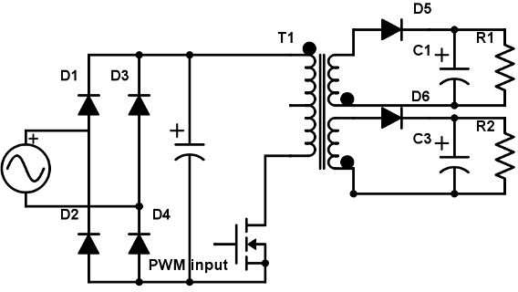

Flyback converter
This project was undertaken as a part of B.Tech project (BTP) requirement under the guidance of Prof. Mukul C. Chandorkar at IIT Bombay. The project was completed over the period of two successive semesters.
First part consists of flyback converter application in pre-charging the module capacitors of a Modular Multilevel Converter (MMC). Second part describes the design procedure for a multi-output flyback converter for powering Nixie tube and a microcontroller.
Schematic
Flyback converter (for DC input) schematic

Multi-output Flyback converter (for AC rectified input) schematic
PCB
Flyback converter (for AC rectified input) printed circuit board
Multi-output Flyback converter (for AC rectified input) printed circuit board